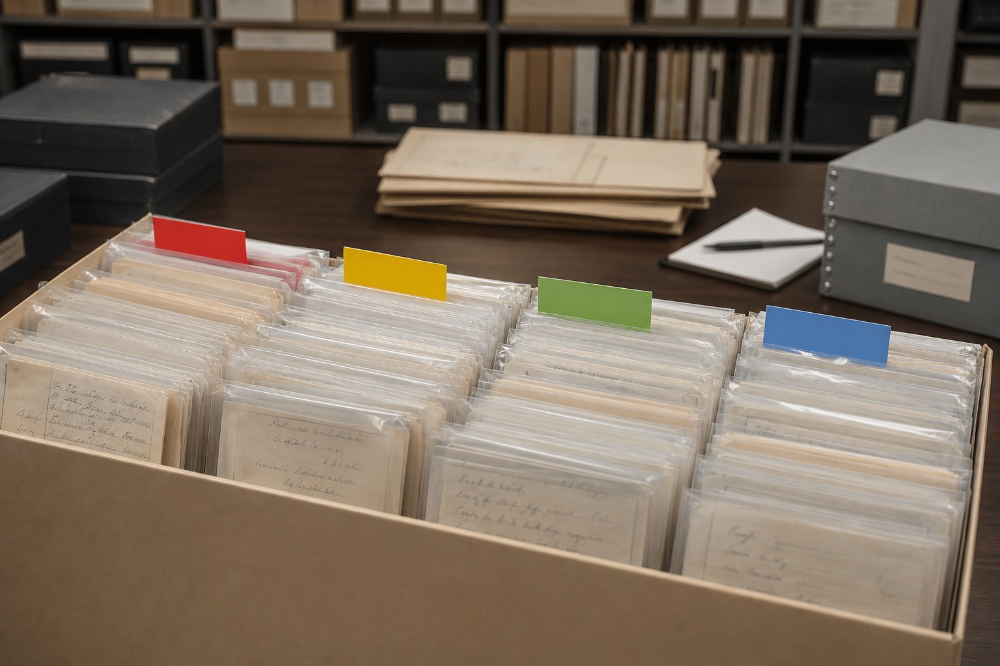
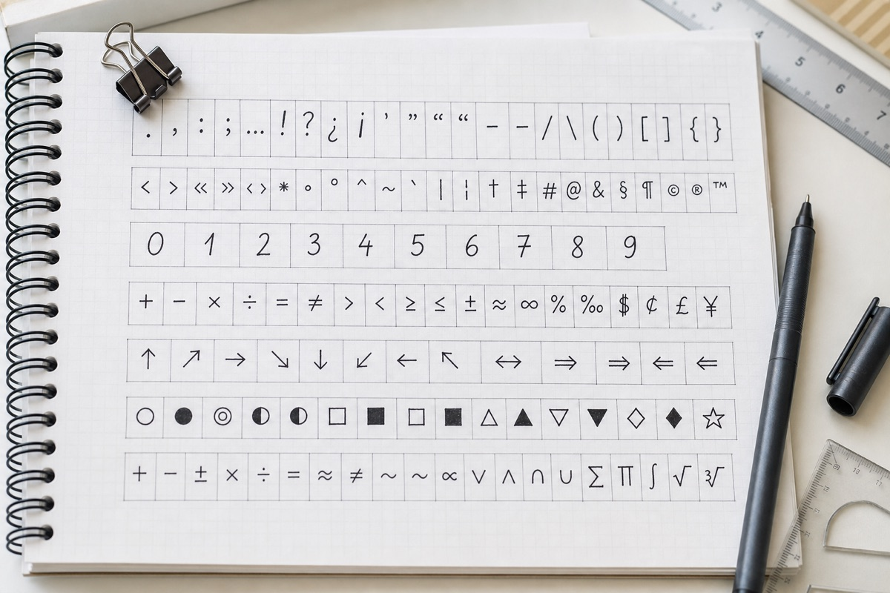

签字样本怎样选择和拍摄？
选择签字样本时，应优先保留多份自然签写，分开正式版与简写版，并拍摄完整页面和清晰细节。
选择签字样本时，应优先保留多份自然签写，分开正式版与简写版，并拍摄完整页面和清晰细节。

案例资料库增加模仿笔迹、模仿签名、笔迹鉴定和手写字体四类筛选标签，方便按需求查看。
观察老年书写样本应建立时间线，并结合书写场景、工具和材料清晰度区分阶段变化与长期习惯。
上海站说明线上接收手写资料时需要准备的目标内容、自然样本、页面数量、文件格式和时间要求。

案例展示页面增加需求、样本、处理过程和结果说明，让不同案例的参考信息更完整。

广州站补充签字样本准备说明，商务签字、日常签名、简写版和完整版本需要分组整理。
JPG、PNG和PDF适合不同的手写文件用途，原始照片、透明图和多页浏览文件应分别保存。
分析商务签字时，应先看宽高比例、倾斜方向和主要连接路线，再比较正式与日常场景中的自然变化。

杭州站整理个人手写字体资料清单，包括测试字稿、常用字符、数字标点、模板版本和补字记录。
个人手写字体字稿可以先测试少量字符，再按模板分批采集，并记录工具、日期、版本和补字情况。